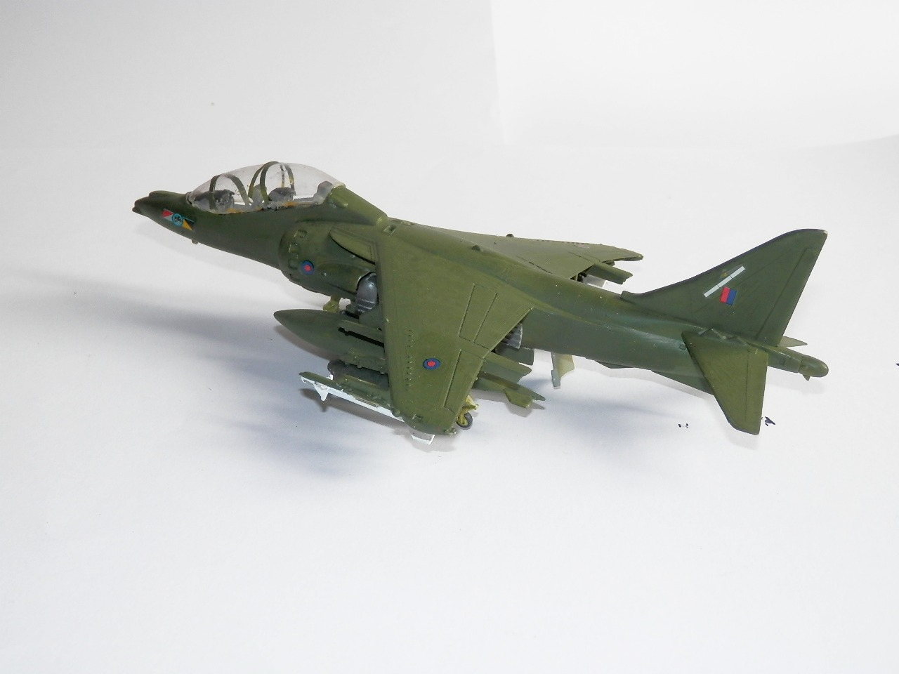
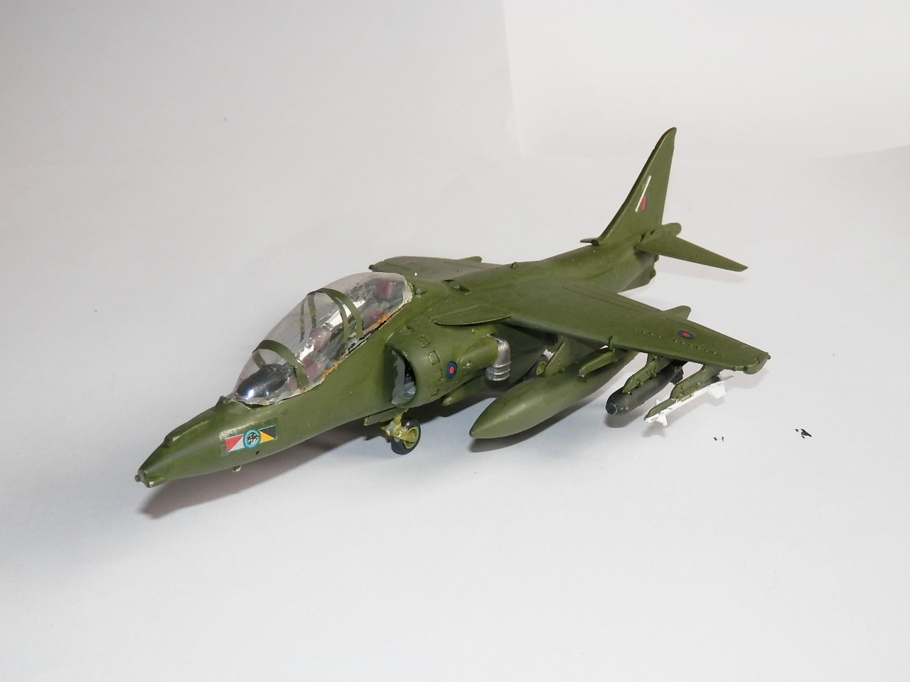

Aerei · scale model archive
Hawker Siddley Harrier T2
Hawker Siddley Harrier T2 — Kit: Airfix, Scale: 1/72. Unusual variant, second hand kit, I had to vac-form the canopy

Photo gallery

English description
Unusual variant, second hand kit, I had to vac-form the canopy
Descrizione italiana
Variante insolita, kit di seconda mano; ho dovuto termoformare il tettuccio.